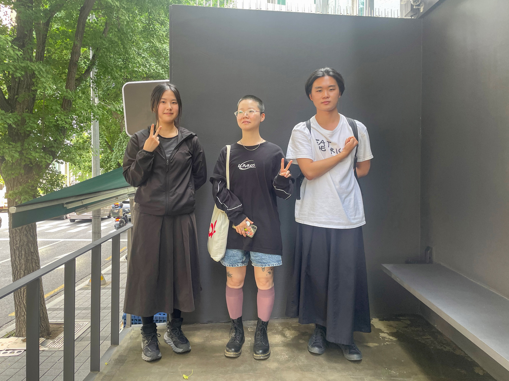
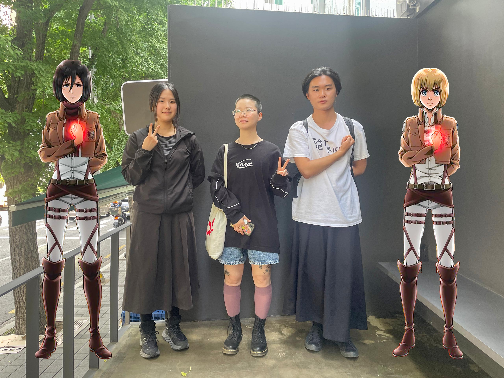

전시 보러 갈래? - 리타님과 함께 2
<6. 전시 보기 / 작가의 의도 / 모름
7. 미술계에서 구조와 창작의 관계
8. 개인과 구조에 대한 이론적 대화 그리고 아마추어리즘
9. 레즈비언 정체성
10. 비평가로서의 욕망: 언어
6. 전시 보기 / 작가의 의도 / 모름
리타: 전시 하나만 보고 그 전시에 대해서 많은 이야기를 하는 일이 사실 되게 힘든 일이에요. 전시에서 보여지는 작품들은 여러 가지 조건에 따라 다르게 나오기 때문에. 그래서 저한테는 작가가 이 전시에서 뭘 하려고 했었는지가 중요하거든요? 이 작가가 앞으로 뭘 하려고 하고 그 과정에서 이 전시는 또 무슨 의미였는지, 이런 거는 정말 작가한테 물어봐야 된다고 생각해요.
시원: 최근에 SeMA 남서울관에서 했던 《김윤신: 더하고 나누며, 하나》를 보면서 친구와 이야기했던 게, 우리가 작업을 보면서 모르겠다고 느끼는 점을 어떻게 받아들일 수 있는지에 대한 것이었어요. 조각을 만든 작가만이 경험했던 시간을 모르는 관객이 김윤신의 조각에 나타나는 손길 같은 걸 어떻게 온전히 느낄 수 있는지에 대해서요.
리타: 뭘 느껴요? 작가의 심정?
시원: 심정을 알아야 한다기 보다는... 조각의 알아듣기 어려운 말에서 어떤 것들을 볼 수 있는지의 문제 같아요. 예를 들어 김윤신 작가의 전기톱 자국을 우리의 눈으로 어떻게 볼 수 있는지의 문제요. 다른 이의 신체를 통해 만들어진 조형 언어가 내 몸 앞에 있을 때, 자신이 세상을 이해할 때 사용하는 명확한 언어에서 벗어난 대상이 내 눈 앞에 있을 때 발생하는 충돌이 있잖아요. 관객이 조각의 표면을 훑는 것 이상으로 이게 뭔지 알고 싶어, 자신이 직접 만들고 싶다는 생각으로 이어질 수 있을 것 같기도 하고요. 이 이야기는 각 개인이 느끼는 예술 자체의 필요성과도 연결되는 것 같아요. 그 이후를 직접 만들고 싶을 만큼의 필요?
리타: 필요 없지 않나? 필요 없는 것 같은데, 굳이 만드는 거는 작가들이 이기적이라서죠.
시원: 이기적?
리타: 자기 욕망에 충실하다는 거죠.
호성: 근데 그런 이기적임 자체가 일종의 셀링 포인트가 아닌가 하는 생각이 드네요. 웬만한 사람들은 대부분 살아갈 때에는 그 정도로 이기적이지 못하니까? 그러니까 완전히 필요 없는 생산물을 자신의 노력을 들여서 만들지 못하니까 예술가들이 그렇게 한다라고 생각을 하고 거기서 대리만족을 하는 맥락에서 셀링 포인트가 될 수 있지 않나.
리타: 그럴 수도 있겠죠. 그럴 수도 있고 같은 이유로 엄청 혐오하고 증오할 수도 있어요.
호성: 약간 향유와 질투로 다시 돌아가는 것 같네요
리타: 그럴 수 있어요. 제가 아까, 작가들한테 물어봐야 작업에 대해 이야기할 수 있다고 말한 이유는 작가들이 그 답을 알고 있어서도 아니고 우리가 작가들의 심정을 알아야 해서도 아니에요. 작가 본인도 모른다는 거죠. 자기가 뭘 하려고 했는지. 그래서 확인을 해야 되는 단계가 필요한 거고, 이 작가가 어떠한 맥락에서 자기도 모르는 상황을 헤쳐 나가고 있는지를 직접 들어볼 필요가 있다는 의미였어요.
작가가 저렇게 얘기했으니까 저게 맞겠지가 아닌 거죠. 그러니까 우리가 김윤신의 작업을 이해하기 위해서 김윤신처럼 작업을 해보는 게 그다지 별 의미는 없을 수도 있다. 왜냐하면 답은 작가가 가지고 있는 게 아니니까.
호성: 작가와 관객이 알려고 소통하기보단 모름 또는 공백을 주고받는 것 같네요. 작품을 통해서 특정한 의미보단 내가 지금 뭘 하는지 모르겠다라는 본연적인 요소를 드러내고 저희는 그걸 통해서, 그러니까 그런 형태로서만 대화를 할 수 있게 되는 것 같아요. 작품을 만들도록 작가를 추동하는 힘으로서의 모름, 이 사람이 어떻게 몰랐길래 이렇게 만들었을까.
재훈: 근데 이번 전시는 잘 읽으셨잖아요.
호성: 그러니까 프로페셔널 하다라고.. 모름에도 예상 가능한 모름, 내가 기대하는 모름이 있는데 그 기대에 잘 부합을 했다.
재훈: 호성님은 이론 공부하시는 분이잖아요. 그래서 저는 호성님이 이 전시를 프로페셔널하다고 생각한 이유가 듀킴 작업들에 아이코닉한 요소가 굉장히 많이 사용됐기 때문이라고 생각했어요.
호성: 네네 맞아요. 아이코닉한 요소를 사용했고 그 선택들이 잘 보였다.
리타: 이게 듀킴 작가 얘기할 때 항상 나오는 말이거든요? BDSM이라는 게 성적 실천, 그러니까 규범적인 성적 실천에서 일탈적인 건데 그런 동시에 저항적인 것일 수도 있잖아요. 일탈적인 것이 그 자체로 저항적인 것은 아니니까. 근데 듀킴 작가가 자기 작업을 설명할 때 자기가 사용하는 소재들이 얼마나 저항적일 수 있는지까지 포함해서 설명한단 말이에요. 그래서 이제 그걸 본인이 설명하게 돼버리면 “과연 저항 효과가 발생할까요?” 라는 질문이 드는 거죠.
예를 들면 성 소수자, 퀴어, 페미니즘과 같은 어떤 가능성을 가지고 있는 종류의 담론들이 작업 안으로 들어와서 설명이 너무 잘될 때, 우리가 속았다고 느끼지 않나요? “이걸 설명할 수 있으면 이 작품은 이미 우리 언어로 너무 편안하잖아. 여기서 뭘 더 할 수 있다는 거야? 여기서 무슨 전복이 일어난다는 거야? 그저 전시장에 갇혀 있을 뿐인데!” 이런 생각이 들잖아요. 마찬가지로 듀킴 작가의 작업을 이렇게 이해하는 경우들도 되게 많고, 작가가 앞으로 어떻게 돌파할지 기대되는 부분으로 이야기되기도 해요.
동시에는 이 갤러리의 언어, 미술의 언어로 자기 작업을 되게 잘 설명하는 것조차도 마조히즘적인 실천일 수 있죠. 법을 준수하기. 너네가 원하는 거 완전히 다 주겠다라는 방식으로 하는 게. 리플렛에 이렇게 적혀 있잖아요. ‘듀킴의 설치 작업은 무언가를 포기하는 것처럼 보이지만 사실은 조종을 통해 힘을 얻고 있음을 증명한다.’ 마조히스트가 사실은, 이 전시가 사실은, 듀킴이 사실은, 작업이 사실은 너네를 조종하고 있다, 이 얘기를 하고 있죠.
시원: 저도 그 점이 이번 전시장 전경을 보면서 더 눈에 띄었던 것 같아요.
재훈: 듣고 보니 《I Surrender》라는 전시 제목이 참 적절하네요.
7. 미술계에서 구조와 창작의 관계
재훈: 리타님은 작가가 본인의 작가적 지형을 이론적으로 너무 잘 알고 있는 것처럼 보여주면 어떤 생각이 드시나요?
리타: 별생각 없어요. 저 작가는 자기가 어디에 위치하고 있는지를 잘 파악하려고 하는구나라고 생각하죠.
재훈: 그걸 작가 스스로 알고 있는지 모르고 있는지 여부가 작품이나 작가에 대한 인상에 영향을 끼치지는 않나요?
리타: 좋고 나쁘고가 아니라, 작가가 어떻게 보이고 싶어 하는지의 문제니까. 어떤 작가는 과묵해 보이는 걸 의도하고 연기하기도 하잖아요. ‘나는 작업에 대해서 아무것도 모른다’ 라는 방식으로. 그게 어떤 의미에서는 작업에 신비함이나 비밀스러움을 더해 주는 방식으로 설명되는 거죠. 또 어떤 작가는 프레젠테이션하듯이 설명을 엄청 오랫동안 길게 하는 경우도 있고.
호성: 예전에 재훈님이 저한테 말씀하신 일화 중에 학부생이 발표로 자기소개를 하는데 자신의 cv를 맨 처음에 붙여놨다, 그런 얘기 하지 않으셨어요?
재훈: 네, 영업 사원처럼만 보이는 작가나 지망생이 싫다고 이야기했었죠. 그게 작업 지원금을 타려면 지원서를 써야 하고, 그와 더불어 작업에 대한 프레젠테이션을 작업이 실제로 만들어지기 전에 해야 되는 미술계의 구조와 직결돼있는 현상인데요. 아직 만들어지지 않은 자신의 작업이 어떤 식으로 사회에 기여하는지를 먼저 쓰고 있는 풍경이 이상하다고 생각했어요. 이건 분명 순서가 잘못됐죠.
리타: 네, 그것도 이해돼요. 말이 작업을 훨씬 초과할 때가 있죠. 작업은 진짜 조금 만들어 놓고 말만 능란하게 포스트 모던 담론 어쩌구 하는 경우는 좀 문제적이지 않나요?
재훈: 근데 그게 일종의 경향이라고 생각해요.
시원: 어떤 경향이요?
재훈: 미술 공부하는 사람들이 현장에서 유통되고 있는 비평적 언어를 굉장히 쉽게 구사하는 현상이요.
리타: 근데 또 한편으로는 왜 그 언어들이 필요해졌을까를 생각해 볼 수 있을 것 같아요. 예를 들면 듀킴 작가 같은 경우에는 무수하게 많은 질문을 받았을 거란 말이에요. 왜 이런 작업해요? 왜 게이 작업해요? 왜 BDSM 작업해요? 이렇게.
준비가 되어 있어야 된다고요. 작가가 자신의 작업에 대해서 부끄러워하지 않고 얘기할. 그런 훈련도 아마 있었을 것이고 또 아까 언급된 그 학부생의 발표를 생각해 봤을 때는 그게 그 작가의 콤플렉스일 수도 있죠. 그런 식으로 이해할 수는 있을 것 같아요.
재훈: 그럼 이 작업 왜하세요? 라는 질문이 들어왔을 때 쭈그리고 있으면 안 좋게 보이려나요?
리타: 그러니까 동료인 사람들한테 설명할 때는 쭈그리고 있어도 괜찮은데, 이런 퀴어 작업 같은 경우에는 공격적인 의도를 갖고 질문하는 경우들이 많잖아요. 설명할 준비가 돼있어야겠죠. 듀킴 작가님뿐만 아니라 제 경우만 해도 그렇고요. 방어할 준비가 항상 돼 있어야 되는 거죠.
호성: 이렇게 우리가 흔히 생각하는 내면의 감각에 집중해서 천재적인 작품을 내보이는 예술가가 아니라 펀딩 계획서도 잘 쓰고 설명도 잘하고 작품도 잘 만들고 전시 기획도 잘하는 작가에 대해 듣다보면, ‘여기에는 다 기계적으로 흘러가는 일종의 코드가 있구나’ 라고 느껴지기도 해요. 모든 프로세스에 다 어떤 스텝과 절차가 있고 뒤돌아보면 그 절차에 따라 모든 게 흘러가고 있고. 그 절차성이 결국 지금까지도 예술에 대한 낭만을 가지고 있는 대부분의 사람들에게 거부를 불러일으키는 것 같아요. 왜냐하면 그럼 더 이상 이해할 게 없다는 거잖아요. 다 그냥 각자의 위치가 있고 그 위치에 따라서 반응하고 감각을 하면 되니까.
리타: 네.
호성: ... 근데 그것도 나름 재밌지 않을까? 라는 생각도 드네요.
재훈: 안은별 연구자와 정지돈 작가가 이 내용에 대해 대화를 나눈 적이 있었는데요. 이 현상을 하나의 장, 혹은 씬Scene 자체의 ‘완결화’라고 부르더라고요. 씬 안에서 생산되는 대부분의 결과물이 사람들의 평균적인 기대치를 충족시키기는 하지만 그와 동시에 우리가 한 번도 상상해보지 못했던 놀라운 경험 같은 것들은 점점 더 볼 수 없어진다고 이야기하시면서요.
호성: 근데 그럼 진짜 어떻게 될 것 같나요? 모두가 각자의 위치를 알고, 그래서 서로 다 기계적으로 뭘 해야 되는지 파악하고 있는 상황이어서 모든 게 다 적당하고, 한 번도 나를 직접적으로 건드리는 경우 없이 잘 흘러가는 회로적인 사회에 살게 된다면, 그게 자신이 예상치 못한 경험을 통해서 뭔가가 건드려지고 그에 따라 본격적인 반응을 하게 되는 지금의 사회보다 더 낫다고 생각할 수도 있지 않나요?
재훈: 어떤 게 더 낫다고요?
호성: 그러니까 굉장히 스무스하게 다 잘 흘러가는 완결화된 사회가 더 이상향적으로 보인다고 생각할 수 있지 않나.
재훈: 여기서 리타님께 드리고 싶은 질문이 하나 있어요. 2021 서울도시건축비엔날레에서 건축가 팀 알라 잉어랑 협업하신 뒤 토크하셨잖아요. 그 자리에서 알라 잉어가 “개인의 경험이 도시를 바꾸지 못한다는 사실을 학생 때부터 했던 프로젝트들을 통해 이미 너무 잘 알고 있는데, 내가 이걸 왜 또 해야돼지?” 라고 고백하셨던 말이 인상 깊었는데요. 비엔날레라는 제도 주관의 행사 속에서 작가들이 겉보기와 작품 소개글에서만 전복적인 - 실제 사회에서 큰 변화를 일으키지는 않는 - 작업 및 프로젝트를 계속해서 해나가는 것에 대한 염증을 스스로 느끼시는지, 혹은 이에 대해 어떻게 생각하시는지가 궁금해요.
리타: 그러니까 뭔가 불화를 일으키는 듯하지만 사실은 굉장히 구조 순응적인 어떤 것들을 계속 제작하는 일에 대한 염증을 말씀하시는 건가요?
재훈: 비엔날레나 기금 공모 같은 행정 시스템이 먼저 있고, 거기에 부합하는 작품들만 만들어지는 작금의 풍경을 씬 안에서 활발하게 활동하는 사람으로서 어떻게 생각하고 있는지를 여쭤보고 싶었어요.
호성: 마르크스주의에서 말하는 물질적인 하부구조의 역학에 기반하여 예술 작품은 그것에 상응하기만 하는 과정처럼 보이는 현상 말인가요? 재훈님의 질문은 경제 논리에 기반해 움직이는 행정 시스템에 따라서 예술계의 흐름이 결정된다고 할 수 있냐는 질문으로 들리네요.
리타: 일단 저는 그렇게 안 보고 있어요. 미술계라는 구조가 선행하고 그 위에 작업이 올라타는 형식으로 단지 구조의 재순환, 재생산, 재유통만을 위해서 작업들이 존재한다고 생각하지 않아요. 그래서 작업들이 하려고 했던 바를 읽는 일이 중요하다고 생각하고요. 작가의 의도라기보단, 작업이 내포하고 있는 어떤 종류의 부정성을 읽기. 작업이 이미 하고 있는 것, 작가가 하려고 하지 않거나 의도하지 않았더라도 작업 안에 이미 포함돼 있는 걸 읽는 일.
사실은 이렇게 얘기했을 때, 저는 제가 어떻게 읽느냐에 따라서 많은 것들을 정말 다르게 볼 수 있다고 주장하는 거거든요? 그래서 읽는 사람이 필요하다고 주장하는 거고요. 근데 ‘구조가 먼저다’ 라고 얘기하는 사람이 항상 있잖아요. 그 주장 같은 경우가 저 같은 사람들이나 작가들을 그저 구조에 달라붙어 있는 기생충으로 볼 수밖에 없게 만드는 거죠. 사실 그렇기도 하고. 근데 이렇게만 봤을 경우에는 참 많은 걸 포기하는 것처럼 보여요.
8. 개인과 구조에 대한 이론적 대화 그리고 아마추어리즘
시원: 그렇게 되면 아무것도 하지 못한 채 가만히 지켜보게 되는 것 같아요. 예술작품을 온전히 구조의 산물이라고 가정하고 쳐다봤을 때 부딫히는 뭔가가 있어요. 모든 질문이나 갈등을 시스템 구조의 문제라고 제쳐버린다면 어떤 시도들은 무력하게 좌절되는 것 같고요. 그건 너무 쉽게 죄책감이 되고 어떻게 보면 엄청 속류적이게 되는 거죠. 당신의 많은 부분이 구조에 의해 만들어진 것이고, 네가 이런 작업을 하는 이유는 네가 어디 지방, 어떤 계급의 부모님에게서 태어나 그 문화 속에서 살았기 때문이야. 이런 빠른 생각이요.
저는 그렇지 않음에 더 다양하고 느린 시간들이 있다고 느낄 때가 많아서, 그렇지 않음을 본인이 계속해서 감지한다면 그것을 제대로 쳐다봐야하지 않을까 생각해요.
호성: 그런데 전 오히려 그렇게 가능성이 닫혀버리는 게 더 나을 거라고 생각이 들기도 해요. 크게 보면 개인과 정체성에 대한 집착은 꽤 많은 경우에 타자에 대한 억압과 폭력으로 이어졌으니까요. 그런 소유적 주체성을 포기하고 안정적인 정체성에 대한 가능성을 닫아버리면 그 닫혀진 공간에서 오히려 지금까지는 다 구조라고 얘기하고 퉁쳐버리는 것들을 미묘하고 세부적이게 바라볼 수 있다라는 거죠. 능동성과 선택에 기반한 기존의 주체성과 반대로, 항복과 수동성과 같은, 개인이기를 포기하는 행위들에는 지금까지 우리가 발굴하지 못한 다른 관계성이 있다고 생각해요. 타자와 다름에 대해 강박적으로 반응하지 않아도 되는 관계들이요.
앞서 언급했던 옷 갈아입기 또는 헐렁하게 입기에서 옷을 갈아입는 행위에 집중을 하다 보면 옷들 사이의 다름과 그 관계성에서 자신을 위치를 찾아야 하죠. 하지만 어떤 옷을 입던지 간에 옷을 입고 있다는 사실은 변하지 않아요. 이미 대가를 치르고 들어가는 거죠. 자신에게 맞는 옷을 찾거나 정체성을 찾을 수 있다는 믿음은 내가 다른 존재들을 배제하면서 자아를 만들어낼 수 있고, 그런 자신을 소유할 수 있다는, 본연적으로 폭력적일 수 밖에 없는 경제에 참여한다는 대가를 치르는 일이에요. 이런 맥락에서 제가 생각하는 ‘옷 헐렁하게 입기’는 배제와 소유의 경제에 참여하는 대가에 대해 의문을 던지는 한 방법이기도 해요.
옷을 안 입을 수는 없지만 옷 하나를 수많은 다른 옷들 중 하나가 아니라 옷 그 자체로 받아들이고, 기존의 관계성과 선택의 가능성을 닫아버리면 오히려 그 닫힌 공간에서 지금까지 감각하지 못한 가능성에 대해 생각해볼 수 있다는 거죠. 모순적으로 들리겠지만 여기서 일어나는 선택은 다른 것들과의 관계에서 나타나는 다름을 통한 주관적이거나 개별적인 선택이 아니라, 모든 차이와 선호로 인한 구별성을 포기하면서 나타나는 선택이에요. 내가 선택했지만 아무런 이유나 논리를 부여할 수 없는, ‘그냥' 이라고 밖에 답할 수 밖에 없는 행위에 가깝겠네요. 구조 안에서 리스크를 안고 놀기보단 구조에 포섭된 사실 자체에 대해 대응하기 위해 구조 안의 다양한 선택지를 포기하는 방법이라고 할 수 있겠네요. 지금 시대라는 맥락에서는 한 번 해볼만 하지 않나? 그렇게 생각을 해봤어요.
리타: 이 말도 무슨 맥락인지는 알겠지만 그 사이에 되게 많은 사람들이 고통받을 수도 있죠. 어떤 가능성을 한계까지 밀어붙이는 과정에서 굉장히 많은 사람들이 고통받을 수도 있지 않을까 싶어요.
호성: 근데 지금 구조 자체가 한계까지 몰아붙였다가 다시 돌아가고 거기서 다시 또 한계 근처까지 가는 사이클이라면, 한 번만 그 사이클을 끝까지 밀어붙여보자라는 욕망이기도 해요. 사실 지금 얘기하고 있는 부정성도 솔직히 제대로 경험을 하면 결코 살아남을 수가 없는 거잖아요. 물론 예술작품에서 감각할 수 있는 저항은 부정성을 포함한다고 볼 수 있지만, 부정성 자체는 죽음처럼 한 순간에 모든 것을 사라지게 만드니까요. 그 경험 이후에 나타나는 것들을 그 이전의 것들과 결코 연결될 수 없게 만드는 것이 곧 부정성의 성질이죠. 대안이나 방향성 없이 말 그대로 모든 걸 부정해버리는 힘으로 ‘부정성'이란 것을 생각해본다면 결코 경험할 수 없는 것이라고도 할 수 있고요. 우리가 작품을 경험하고 살아 돌아올 수 있는 이유도 결국 부정성이 끝까지 가지 않기 때문이라는 생각이 강하게 들고, 정말 부정성을 의도한다면 저는 그런 부정성 역시 개인이나 정체성을 파괴하면서 발현되는 거라고 생각해요.
제도적으로 봤을 땐 예술이 부정성을 향해 가는 방향성이 지금처럼 규범적으로 받아들여져야 하는가. 그러니까 예를 들어 꼭 저항이 키워드여야 하는가. 오히려 순응을 중점으로 보고 어떻게 상응하는지를 보면 그것도 재미있지 않을까? 듀킴 작가의 작품들에 대해서도 그런 맥락에서 얘기 한 것 같아요.
시원: 알 것 같다가도 헷갈리네요. 규범 안에서의 저항이 무력할 수밖에 없어선가요?
리타: 지금까지의 저항이라는 게 사실 이미 많은 부분 구조 안에 포섭이 되어버린 저항이라서요. 음.. 아까부터 언급된 옷의 비유로 이야기를 해볼게요. 지금 우리가 입고 있는 이 옷 바깥에 어떤 자유가 있을 거라 생각하고 이 옷으로부터 나가고자 하는 게 저항의 방식이라면, 순응의 방식은 옷이라는 조건을 받아들이되 옷과 내 몸 사이의 빈틈에 주목하는 일이에요. 그 빈틈의 크기를 계속해서 키우는 가능성도 있으니까요. 그래서 순응에 대한 호성님의 의견은 곧 관점을 바꾸자는 말인데 그러려면 일단 구속복 자체를 긍정해야 되는 거라고 저는 생각이 들거든요? 이 의견에 얼마나 많은 사람들이 동의할지 모르겠어요.
호성: 그런데 저는 구조에 순응하느냐 저항하느냐의 문제에 대해서 그것에 부정도 긍정도 하지 않은 상태에서 있을 수 있다고 생각해요. 그러니까 세상이 어떤 필연적인 구조를 가지고 있고 거기에 속할 수밖에 없다는 것을 안다고 해서 그것을 긍정해야 하는 것은 아니잖아요. 구조나 구속복의 존재에 대한 최소한의 인정과 그것을 긍정하는 것 사이의 간극, 어쩌면 논리적으로만 존재하는 그 간극을 제대로 파헤칠 필요가 있다고 생각하고... 이 부분에 대해선 바틀비의 거부도 순응도 하지 않는 부정성에 대해서 얘기해 볼 수도 있겠네요. 어느 날부터 다니던 직장에서 일을 점점 하지 않더니 회사 건물에서 불법으로 사는 걸 상사가 알아채고, 건물에서 쫓아내려고 해도 나가는 걸 “선호하지 않는다" 라는 말만 반복하면서 거부도 순응도 않는 뻔뻔하면서도 완강한 수동성을 보여주니까요.
리타: 바틀비 죽잖아요 (웃음)
호성: 애초에 살아있다고 할 수 있었는지...
시원: 저는 아까부터 개인에게 힘을 부여해서 잘 된 적이 하나도 없었다는 내용을 들으면서 진격의 거인이 생각났어요. ㅋㅋㅋ
리타: (웃음) 그건 잘 된 거 아니야?
시원: 긍정도 부정도 하지 않고 계속해서 존재할 수 있다는 게 이상적인 상태에 가깝다고 생각하는데 각기 다른 위치의 사람들이 그 공간을 찾아내기까지 어려움이 있지 않을까...
재훈: 옷을 헐렁하게 입을 수 있다는 호성님의 의견을 어제 들었을 때는 제가 설득되지 않았거든요? 근데 오늘 말씀해주신 내용을 듣고 나니 설득이 되네요. 그렇다면 긍정도 부정도 하지 않는 유보의 상태를 어떻게 계속할 수 있을지가 궁금해요.
호성: 그러니까 부정도 긍정도 하지 않은 상태에서는 애초에 ‘내가 뭘 하고 있다.’ 라는 자의식이 엄청나게 약해진 상태이기 때문에 ‘나는 지금 그 정도 긍정도 안 하고 있는 상태에 있다.’ 라고 판단하기가 거의 불가능해요. 그렇기 때문에 그 상태도 유지하기 힘들다고 생각이 드는 거죠.
재훈: 잘 이해가 안 됩니다...
호성: 그러니까 ‘나는 지금 그 정도 긍정도 안 하고 있다.’ 라는 판단 자체를 못하는 거에요. 왜냐하면 판단 자체를 못하는 공간이기 때문에. 저항 같은 경우는 곧 무언가를 거스르는 일이고, 거스르는 감각은 명확하기 때문에 내가 저항을 하고 있다는 감각 역시 확실하게 인지할 수 있잖아요. 하지만 내가 부정도 긍정도 안 한 상태라면 그런 판단이나 감각을 인지하기 힘들기 때문에 내가 현재 그 상태에 있는지 모른다는 거죠. 그래서 아까 말씀하신대로 판단 자체를 못하는 공간에 계속해서 있는 일이 힘든 게 아니냐? 라는 질문은 어느 정도 맞는 말이죠. 왜냐하면 우리가 그런 공간이 있다는 사실을 확신치 못하니까. 본질적으로 봤을 때 그래서 그런 자의식은 그래서 그냥 그런 거죠. 그래서 모른다
시원: 모른다는 상태가 어떤 점이 더 좋다고 생각하시는 거예요?
호성: 지금까지 인류가 그렇게 강한 정체성과 저항을 가지고 만들어왔던 엄청난 양의 파괴와 죽음 같은 것들을 안 할 수 있다는 점을 좋다고 생각해볼 수 있죠.
시원: 근데 모를 때 오히려 더 죽고 싶어질 수도 있잖아요.
호성: 근데 죽고 싶어질 수는 있어도 죽이고 싶어지지는 않잖아요. 상대방을 죽이고 싶어하는 의지의 논리가 내가 엄청나게 강한 자의식을 가지고 있어서 ‘네가 나랑 다르기 때문에 내가 너한테 공격성을 표출해.’ 이런 거라면, 애초에 자의식이 엄청나게 약한 사람은 상대방을 죽이고 싶은 마음이 별로 안 들 거 아니에요. 상대방이라는 게 제대로 인지도 안 되고 또는 상대방이 인지가 돼도 상대방의 다름이 공격적으로 인지되지 않는다는 맥락에서.
재훈: (잠시 나갔다온 리타에게) 긍정과 부정의 중간 상태에 대해서 계속 이야기하고 있었어요.
호성: 긍정도 부정도 하지 않는 상태. 그 중간 상태랑은 달라요.
리타: 어쨌든 모든 사람들을 한 곳에 몰아넣기는 좀 힘들 것 같아요. 힘들기도 하고요. 그게 가능한가? 아니, 그보다도 그걸 내가 원하나? 라고 자문했을 때 별로 원하지 않는 것 같아.
호성: 약간 선호도
재훈: 저는 긍정과 부정에 대한 이야기를 제가 처한 상황에 대입하는 방식으로 따라가고 있는데요. 예를 들어 한국 사회는 대학교를 졸업한 사람들에게 취업을 권장하잖아요? 취업을 목적어로 뒀을 때 긍정이란 선택지가 취업을 (준비)하는 것이고 부정이란 선택지에는 ‘아 몰랑~ 나중에 어떻게든 되겠지~ I Only Live Once!’ 정도가 있을 것 같아요. 이 두 가지 선택지 중 무엇 하나를 지금 당장 결정하지 않아도 된다는 게 호성님이 말씀하신 긍정도 부정도 하지 않은 상태랑 비슷하다고 이해했거든요. 좀 다른가요?
호성: ‘미루기’란 그 대상을 시간적으로 고려하는 일이고, 제가 말하고 있는 것은 그 정도도 안 하는 상태, 말 그대로 안 하고 있는 상태인 거죠. 재훈님이 말씀하신 거는 안 해도 되는 상태, 그러니까 미뤘기 때문에 나중에 해야 되지만 지금은 안 해도 되는 상태인 거고요.
재훈: 미래에도 그 생각을 하지 않는 거예요?
호성: 시간 자체가 흐려지는 거죠.
재훈: 그러니까 취업하라는 요구를 굉장히 흐리게 인식하는 건가요?
호성: 그렇죠 네.
재훈: 너무 좋은데요? 듣다보니 이여로님이 주장하시는 아마추어리즘과도 비슷한 것 같아요.
리타: 그런가? 아마추어리즘이 수동성은 아니지 않나?
재훈: 등단 제도나 공모 제도를 관련지어 생각하면서 맞닿는 점이 있다고 생각했어요. 공모 시스템이 우리에게 끼치는 영향 중에 지원서 잘 쓰기 능력 혹은 프레젠테이션 능력을 갖춘 뒤 제도 사람들과 심사위원을 설득하는 데 성공해야 자기가 원하는 활동을 자율적으로 할 수 있다는 듯이 생각하게 만들잖아요.
리타: 네네네.
재훈: 아마추어리즘이 학위나 등단 혹은 당선을 통해 어떤 자리를 차지하고 있지 않더라도, 내가 지금 가지고 있는 여건과 인간관계를 자원 삼아 지금 하고 싶은 활동을 지금 하는 태도잖아요. 저는 그게 제도가 모종의 자율성을 보장해 준다는 믿음을 굉장히 흐리게 생각하게 만든다고 생각하거든요. 이런 점에서 맞닿아 있다.
리타: 아마추어리즘이랑 수동성은 제도를 중심으로 생각을 안 해봤을 때 그 차이가 더 드러나는 것 같다고 생각해요. 수동성은 선택에 대한 문제인 것 같고, 아마추어리즘은 사실 제도 바깥의 다른 움직임들을 읽어내려는 이유로 고안되는 것 같아요. 둘은 좀 다르다고 느껴지는데 크게 봐서 아마추어리즘을 선택하는 게 수동성과 연결된다고 볼 수 있겠죠.
재훈: 여기서 수동성이란 무엇인가요?
리타: 선택 안 하는 거 같아요.
호성: 그러니까 수동적인 사람을 외부에서 보면 아마추어라고 인식을 할 수는 있겠죠.
리타: 그렇죠.
호성: 그런데 수동적인 사람은 그런 개념이 전혀 없는 거죠. 프로처럼 보일 수도 있고 아마추어처럼 보일 수도 있고.
재훈: 아무 생각 없어 보이는 그 상태가 좀 부러워지네요.
9. 레즈비언 정체성
재훈: 아, 그리고 저희가 리타님에게 여쭤보려고 했던 질문 중에 성 정체성에 대한 것도 있었어요.
리타: 버겁다 ^^
시원: 근데 이건 저도 정리가 안 된 질문이기도 해서, 음. 정리해서 질문을 드리면, 레즈비언 정체성을 갖고 계신데...
리타: 제가 갖고 있지는 않은데. 주머니에서 막 꺼낼 수 있지는 않아요.
시원: 그렇게 이야기 하시면..ㅜㅜ
재훈: 어.. 제가 받아서 이야기할까요? 아마 ‘정체화'에 대한 질문이었던 것 같은데요. 자신의 경험을 어떻게 사유하고 정체성으로 수렴시킬 것인지에 있어 일전에 리타님이 젠더 살롱 연재글에 쓰셨던 글 중 하나를 두고 이야기했었어요. 연재글 중에서 리타님이 본인의 레즈비언 정체성을, 현재 남성분과 연애하는 것과 더불어서 고민하셨던 내용이 있었잖아요. 남자와 연애한다는 사실까지 본인의 삶으로 생각했을 때 어떻게 레즈비언으로서 스스로를 지속할 수 있을지 궁금했어요.
리타: 이제 그만하려고요. 안 그래도 저 이제 그만하려고요. (웃음) 농담이고. 지금 남자랑 만나고 있는데 레즈비언으로 정체화하는 게 지속 가능하냐. 그러게요. 어떻게 해야 할까요? 잘 모르겠어요. 저는 제가 변한 것 같진 않아서, 이 변한 것 같진 않은 점이 유감이에요. 변했다면 뭔가 좋았을 텐데, 설명할 게 더 많았을 텐데.
호성: 그러면 생각이 외부적 행위에 따라서 정체성을 변경해야 한다는 방향으로 가는 건가요? 그러니까 남자랑 사귀니까 내 레즈비언 정체성에 대해서 뭔가 생각을 해야 된다라는 방식으로 생각이 흘러가는 건지 아니면
리타: 제가 생각하는 것도 있는데 주변에서도 진짜 많이 물어봐요. 제가 생각하는 것도 많았죠. 지금은 거의 안 해요. 원래 초반에 한 1년 정도는 진짜 막 너무 이해하기 힘들었어요. 이게 가능한 일인가? 거의 새로 정체화하는 것처럼 사람한테 이게 어떻게 가능하지? 이런 생각을 했던 것 같고 지금은 거의 생각하지 않는데, 그러니까 두 가지 생각이 동시에 있어요.
하나는 이게 되게 오래된 부족적인 용어라서 이 부족을 내가 떠나기 싫어하는 것 같다. 그리고 이거를 바꿀 수가 없다. 왜냐하면 엄청 오랫동안 이거에 대해서 생각했으니까요. 한 몇 살이냐, 내가 20년 넘게 이거에 대해서 생각을 했으니까, 이거를 벗어나면 다른 생각을 할 수 없다. 예를 들어서 어떤 사람들은 그럼 바이섹슈얼 아니야? 그럼 젠더 퀴어 아니야? 뭐 뭐 아니야? 그냥 퀴어 아니야? 이렇게 얘기하는데 그 용어로는 설명되지 않는 나의 어떤 부분들이 거의 뿌리처럼, 뿌리 정체성처럼 저한테 있고요. 아직까지는 다른 용어들에 대해서는 상상을 해본 적이 없다라는 게 있어요. 또 다른 면에서는, 그래도 어느 시점이 지나면 나는 아마 이 단어가 아닌 다른 단어로 이행하지 않을까 그런 생각이 들기도 해요. 그게 뭐가 됐든.
왜냐하면 되게 많은 사람들이 이런 불편함 때문에 굉장히 넓은 범주의 용어로 이동하거든요. 퀴어라든지 또는 성소수자라든지. 이렇게 얘기했을 때는 나를 설명하는 거에 있어서 아무런 걸리는 게 없거든. 근데 내가 레즈비언이라고 얘기를 하면 사람들이 ‘너는 지금 남자 만나고 있잖아!’ 라고 얘기를 하는 거죠. 제 인생에서 딱 2년의 경험을 가지고 얘기하는 거죠. 그랬을 때 저는 아직은 준비가 안 됐어라는 생각이에요. 아직이 아니라 전혀 준비가 안 돼서 좀 억울하기도 하고요. 계속 레즈비언으로 살아오다가 2년 남자 만났는데 갑자기 이제 와서 내가 가지고 있던 모든 걸 다 내놓고 다른 데로 이사를 하라고? 미쳤냐? 너 같으면 제정신으로 하겠냐? 라는 생각이 들어요.
재훈: 정체성에 대해 질문을 받으시면 어때요? 기분이.
리타: 님들이니까 대답해 주는 거죠.
시원: 감사합니다..
리타: 다른 경우라면 당황하지 않았을까요? ‘에-? 여기서요?’ 이렇게 말하지 않았을까요? 갑자기 스트립쇼 하는 거니까.
10. 비평가로서의 욕망: 언어
호성: 말씀하신 부분에서 정체성과 함께 나오는 언어에 대한 고민이 공감이 돼요. 어떠한 용어로 표현하거나 잡아내고자 하는 것도 굉장히 특정한 욕망이라고 생각하는데, 레즈비언이라고 해서 꼭 그렇게 언어로 표현하고자 하는 욕망을 가지는 건 아니라고 한다면, 이렇게 언어로 표현하고자 하는 욕망은 정체성과 어떻게 엮어들어가는지 궁금하네요.
재훈: 본인을 설명해야 하는 상황이 생겨야 되는 것 같아요.
호성: 그것도 있고 큰 관점에서 언어와의 관계를 어떻게 맺고 계신지 궁금한 것 같아요. 비평을 쓰는 사람으로서도 궁금하고요. 예를 들어서 《Bench Side》에서 글을 쓰신다고 했을 때 그냥 시각성에 대해서만 쓸 수도 있는데 그게 아니라 ‘뭔가가 더 있다.’ 라고 말씀하셨을 때도 ‘더 있다’ 라는 느낌을 언어로 잡아내고 싶어 하시는 것 같았고. 단순히 쓸 수 있어서가 아니라 그 너머의 무언가를 잡아내려고 하는 방향성이 비평을 쓰시면서 체득한 훈련이나 습관인 건지, 아니면 그것보다 좀 더 레즈비언 정체성처럼 20년 동안 생각해온, 이론을 선행하는 부족적 감각에서부터 비롯된 건지...
리타: 어렵다.
재훈: 다른 전시들보다 그 전시를 좀 더 중요하게 생각하니까 그런 건가요?
리타: 글을 써야 되니까 생각을 하는 거죠.
재훈: 그냥 직업 윤리인 건가요? 그냥 아르바이트 하는 것처럼 적당히만 할 수도 있잖아요.
리타: 보통은 저를 위해서 쓰는 거지만, 정확히는 내가 지금 느낌으로 가지고 있는 것을 물질적으로 만들기 위해서 쓰는 거지만, 그거를 내가 보고 싶어요. 어떻게 결정화되는지가 보고 싶어요. 그게 1번이고, 2번은 그러니까 보통 이거를 읽을 다른 세대나 다음 세대나 아니면 어떤 뭔가..
예를 들어서 미술 글을 그냥 어물쩍하게 써도 다른 미술 독자들은 다 읽을 수 있어요. 제가 특정하는 건 진짜 특정한 종류의 사람들인데.. 님들 같은 사람들이거든요. 제가 특정하는 건 그냥 서울의 미술을 좋아하는 사람들이 아니라, 일반 교양을 쌓기 위해서 미술을 보러 다니는 종류의 대중이 아니라, 하여튼 퀴어겠죠. 모르겠다. 하여튼 그런 사람들은 더 원한다고 생각이 돼요. 그냥 미술 글이 아니라. 더 원한다는 생각이 드는데.. 하... 그 맥락을 얘기할 수 있는 사람들이 몇 명 없으니까 이상한 책임감이 있는 거죠 여기에는. 이 전시가 왜 퀴어한가? 를 설명하는 데는 더 많은 맥락이 필요하니까. 맥락을 구체적으로 얘기할 수 있는 사람들이 몇 명 없다. 그래서 해야 됨. 그런 생각이겠죠.
시원: 리타님 글을 읽으면 아주 찰나에 느꼈다 지나친 그것을 언어화해서 늘어놓으시는 게 느껴져요. 그런 쥐어짜냄 같은 것들을 읽을 수 있도록 만드는 건 더 어려운 일이라고 생각하는데, 차라리 없는 것 치고 싶어지는 것들에 대해 말하는 일을 어떻게 계속해서 할 수 있을까? 같은 질문 아닌 질문이 있어요.
리타: 수명이 깎여요. 수명이 계속 깎여서 지금 얘기하고 있는 동안에도 수명이 계속 깎이고 있어. (웃음) 왜냐하면 우리가 느끼는 게, 제가 느끼는 것들이 어떤 사람들이 하루 종일 생각해도 된다고 허락하는 게 아닌 것 같아요.
예를 들어서 제가 학교에서 느끼는 지속적인 환멸은 학교에서 가르치거나 학교에서 얘기해도 된다고 허락된 것들이 아니거든요. 그리고 제가 느끼는 어떤 되게 찰나적이고 마이너한 그런 것들이 큰 감정이 아니라, 큰 감정이라서 하루 종일 얘기할 수 있는 그런 것들이 아니라, 그리고 사람들이 막 많이 얘기해 놓은 것도 아니라서 얘기하려면 진짜 저를 자원으로 써야 하는데 이거를 제가 가지고 있다가 쓸 때 짜내는 이 작업을 제가 봤을 때 많은 사람들이 선호하지 않는 것 같거든요. 그래서 해야 되는 것 같다. 하.. (한숨)
재훈: 책임감을 어떻게? 물론 그 책임감을 가지고 써내시는 것들이 저희들한테 좋은데
리타: 저도 좋아요.
재훈: 좋으세요? 주시면서?
리타: 주는 게 좋은 게 아니고 내가 쓰는 게 좋은 거지.
호성: 만약에 아무도 못 읽는 상황이 된다고 해도 글을 쓰는 책임감은 계속 느껴지는 건가요?
리타: 저는 계속 아무도 안 읽는 걸 썼어요. 지금 상 받으니까 사람들이 갑자기 청탁도 많이 하고 하는 건데 2년 전만 해도 제 독자라고 하는 사람들은 아무도 없었죠. 방송 팬들은 많죠. 근데 그 사람들은 제 글을 읽는 사람들은 아니었어요. 지금도 아마.. 근데 그거를 기대하고 쓰진 않으니까. 저는 제가 쓴 글을 10년 뒤에 읽었을 때 막 부끄러우면 좀 그렇잖아요. 이건 가짜였어! 이렇게 생각하면 제가 엄청 부끄러우니까.
호성: 예전에 어떤 야구 만화에서 너의 편지는 나에게 성전이었다 라는 말에 대해 쓰셨는데
리타: 외인구단
호성: 네 맞아요. 그거에 대해서 굉장히 한남 같다라고 하면서도 공감을 하셨던 기억이 나는 것 같은데요
리타: 일기였던 것 같은데요? 일기에 썼던 글을 물어보다니 (웃음)
호성: 얘기해도 되나요?
리타: 네네.
호성: 거기서 얘기했던, 편지에 내재된 믿음과도 유사한 것 같아요. 내가 편지를 타인에게 쓰면 그것이 도착할 거라는 완전한 믿음 하에서 쓰고, 받는 자 역시 그것이 도착할거라는 믿음 아래에서 소통이 이루어진다면, 글을 쓰는 것도 그런 전하는 자와 받는 자 사이에서의 완전한 믿음이 요구되는 것 같다고.
리타: 그렇죠 그렇죠 그렇죠. 왜냐하면 저는 제가 그런 수혜를 받았기 때문에. 어떤 사람들이 막 100년 전에 쓴 글을 읽고, 거의 그러는 글들만, 그런 글들이 아니었으면 벌써 죽었겠죠. 근데 그런 경험이 있기 때문에 저는 읽을 사람들을 믿고 있는 건데 그게 뭐 동시대 사람들은 아니어도 되고. 누구는 읽겠죠.
재훈: 동시대 사람들이 갑자기 많이 찾아주시니까 기분이 어떠세요?
리타: 아무 생각 없어요. 서울은 잔인한 곳이기 때문에. 효용 가치가 중요하지, 매력이랑.
재훈: 네, 듀킴 개인전 《I Surrender》을 중심으로 이 전시와 그 바깥에 있는 컨텍스트 이야기를 한 뒤에 리타님에게 궁금했던 질문까지 물어보는 그런 2부의 구성으로 이번 토크도 성황리에 마무리되었네요. ^^ (흡족)
리타: 나는 수명 깎였어요 지금.
.
.
.
.
.
.
.
.
.
.
.
.
.
.
.
.
.
.
.
.
.
.
.
.
.
.
.
.
.
.
.
.
.
.
.
.
.
.
.
.
.
.
.
 